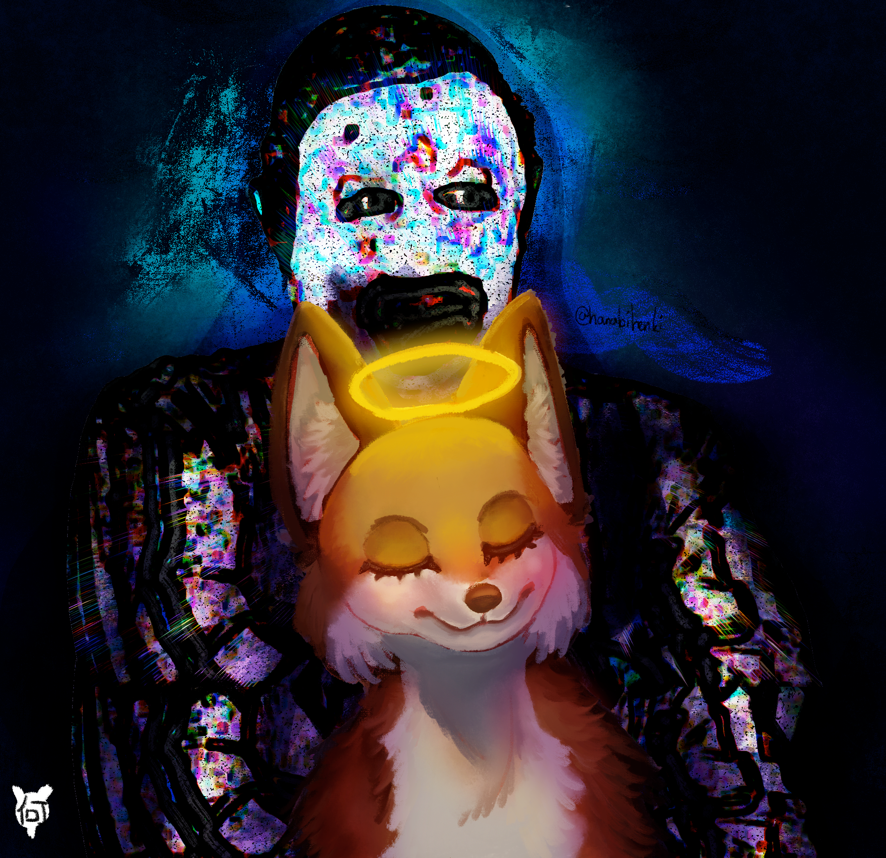
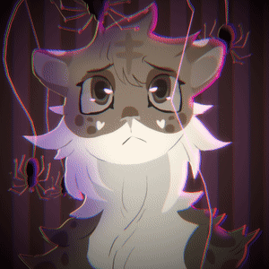
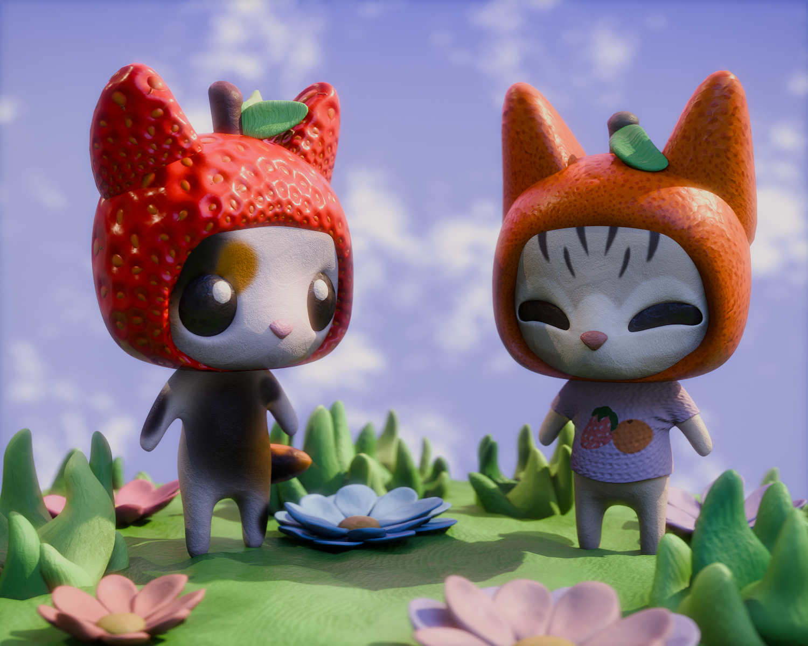
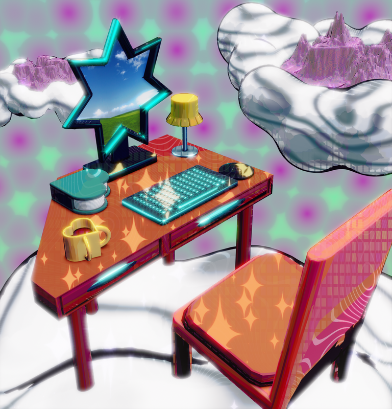
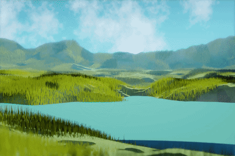
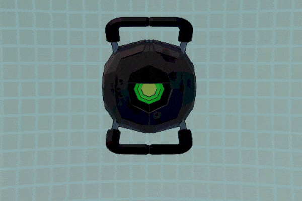

My Angel
Personal art with many meanings. Used Art 74 skills to create a glitch effect. Photoshop.
 Ray's Portfolio Fall 2026
Ray's Portfolio Fall 2026

Personal art with many meanings. Used Art 74 skills to create a glitch effect. Photoshop.

Used Art 74 skills to create glitch effect. Drawn in Photoshop.

This animation was made with Blender grease pencil, using vector lines. I utilized the 3D aspect of the software to create a parallax effect with the background and foreground. I also utilized effects built into Blender for lighting, chromatic aberration, vignette and the line wobble.

Model created in Blender. Made for Art 102 class. Used procedurally generated textures as well as image textures.

Model created in Blender for Art 74. Testing compositor built into Blender to edit renders.

Made in Blender. Testing physics simulations with water.

Made in Blender. Character animation and interaction with non anthropomorphic models that aren't rigged.
Made for Art 105. I created a 5 minute short film in one month by myself. Used Blender, Logic Pro X, Adobe After Effects and Audacity.